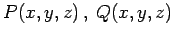
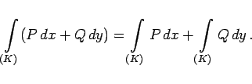
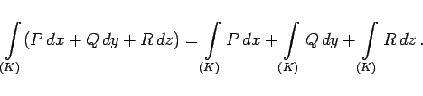

Inhalt Index DeskTop Bronstein

 Integralrechnung Kurvenintegrale Kurvenintegrale allgemeiner Art
Integralrechnung Kurvenintegrale Kurvenintegrale allgemeiner Art


Kurvenintegral allgemeiner Art wird die Summe der Integrale 2. Art über alle Projektionen einer Kurve genannt. Wenn entlang des vorgegebenen Kurvenstückes K zwei Funktionen P(x,y) und Q(x,y) von zwei Veränderlichen oder drei Funktionen  und R(x,y,z) von drei Veränderlichen definiert sind und die entsprechenden Kurvenintegrale 2. Art existieren, dann gilt:
|  | (8.118a) |
|  | (8.118b) |
Die vektorielle Darstellung des Kurvenintegrals allgemeiner Art und eine Anwendung in der Mechanik wird im Abschnitt ,,Kurvenintegral im Vektorfeld`` behandelt.